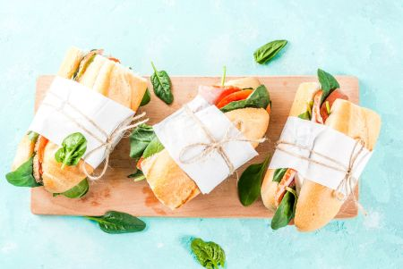

Pick A Date
Find a menu and pickup location that works for you. After your donation, you will receive an email with the exact location of our FundHer lunch distributor and pickup time. You will also receive a reminder on the Friday before Monday's lunch.
Show Your Support
All the proceeds from each sale will go directly to fund Jasi Robinson's campaign to put a truly progressive Democrat in the State Senate representing NY-23.
Enjoy Your Lunch
Pick up your lunch at the location and date you chose (or have it delivered to you if you order for 4 or more people!) and enjoy a delicious meal knowing you are contributing to making New York State a more progressive place.
Current Candidate: Jasmine "Jasi" Robinson
Running for: Democratic nomination for State Senate, NY-23
Why we love her
- She is running against a member of the IDC, a group of "Democrats" that allows Republicans to control the State Senate.
- Her priorities are health care, addressing climate change and protecting vulnerable communities in NYC.
- She grew up in a single-parent household and put herself through college, so she knows how important community support can be!
Learn more
Support Jasi:
| Date | Pickup | Menu | Chef | Reserve |
|---|---|---|---|---|
| July 30 | Chelsea/Midtown | Tuscan Bread Salad, Peaches and Plums, Olive Oil Cake | Eugenia Bone | Buy |
